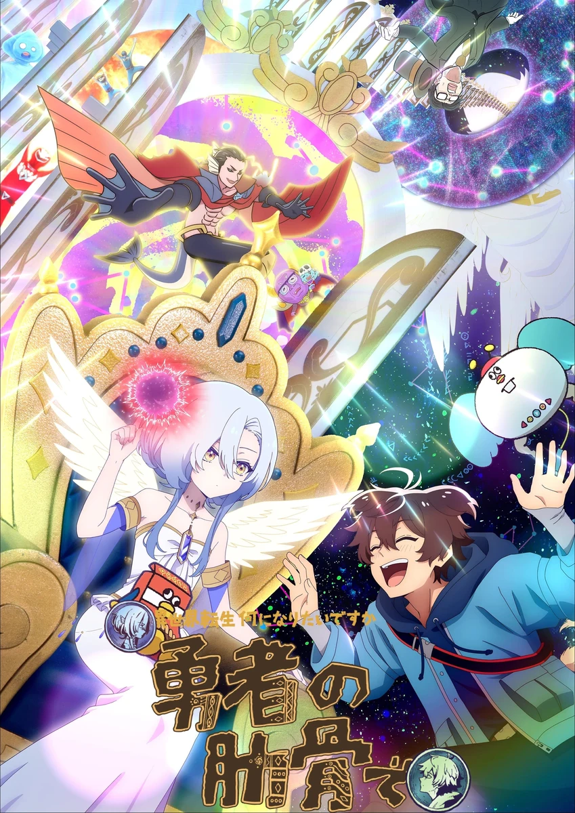

COMPLETE RECORD · Pages 轻量资料
女神“异世界转生想成为什么”我“勇者的肋骨”
女神『異世界転生何になりたいですか』俺「勇者の肋骨で」
别名
- Megami "Isekai Tensei Nani ni Naritai Desu ka" Ore "Yuusha no Rokkotsu de"
- Megami "Isekai Tensei Nani ni Naritai Desuka" Ore "Yuusha no Rokkotsu de"
- My Ribdiculous Reincarnation
- 形式
- TV
- 首播
- 2026-04-07
- 集数
- 12 集
- 评分
- 7.1
- 评分人数
- 4011
SYNOPSIS
简介
转生处是…「开后宫又有快乐结局的开挂勇者…的肋骨」！？ 颠覆动画常识的异世界转生动画诞生了！ 除了动画之外，还会用定格动画、人偶剧、真人拍摄等打破常规的手法呈现，为大家献上冷淡的异世界转生负责人「女神大人」与重复进行奇葩转生的主角「我」的痛快异世界转生记！
[简介原文] 転生先は…「ハーレムかつハッピーエンドなチート勇者、の肋骨」！？アニメーションの常識を覆す、異世界転生アニメが誕生！ 舞台は転生先を自由に選べる世界。――しかし近頃は転生希望者の数が増えすぎて「チート持ちハーレム勇者」は待ち時間が５万年！「魔王」への転生すら千年単位の待ち時間が当たり前。それなら、と主人公が選んだ転生先は「ハーレムかつハッピーエンドなチート勇者、の肋骨」だった！ さらに、「ヤドカリ」や「野菜」に「リア充を爆発させる時に使う爆発物」まで、次々と転生を繰り返し！？ アニメ映像に加えて、ストップモーション、人形劇、実写など型破りな映像手法でお届けする、塩対応な異世界転生担当の「女神さま」と、トンデモ転生を繰り返す主人公「俺」の痛快異世界転生記！
EPISODE LOG
正片章节
已收录 12 条正片章节
- 1勇者的肋骨 首播：2026-04-07
- 2寄居蟹 / 魔王城的右门 首播：2026-04-14
- 3钟楼的秒针 / 负责通知勇者升等的脑中的人 首播：2026-04-21
- 4蔬菜 / 装在宝箱上的锁 首播：2026-04-28
- 5秘传卷轴上的绳子 / 情侣接吻时在他们后面一个人寂寞地坐着的单身男性所感受到的尴尬气氛 首播：2026-05-05
- 6让现充爆炸时用的爆裂物 / 持续与河狸进行炽烈生存竞争的世界树后代 首播：2026-05-12
- 7设置在迷宫墙上的火把 / 迷宫主题异世界的主角投宿的旅馆的枕头套 首播：2026-05-19
- 8勇者的咖喱盘 首播：2026-05-26
- 9在恐怖游戏之类的场合主角躲藏时使用的置物柜 / 卡车司机 首播：2026-06-02
- 10不会回来的回力镖 / 由招牌动作产生的爆炸跟烟 首播：2026-06-09
- 11百合后宫勇者第三个攻略的王道属性被前两个人用掉越后面登场的人越有爆点到剧情中段除了名字都没什么描写靠近结尾时甚至连名字都没出现的美少女角色 首播：2026-06-16
- 12拯救世界的勇者 首播：2026-06-23